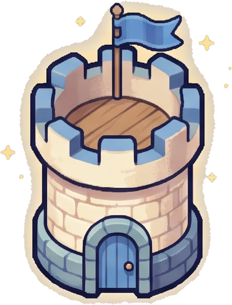
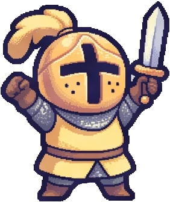
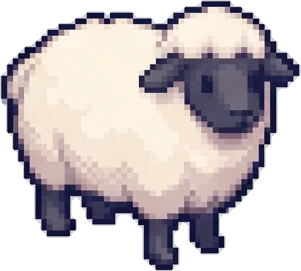
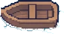
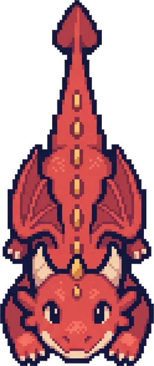
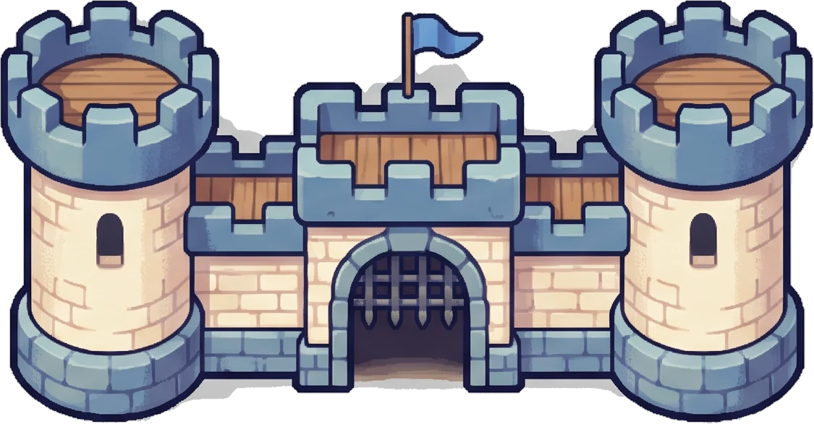
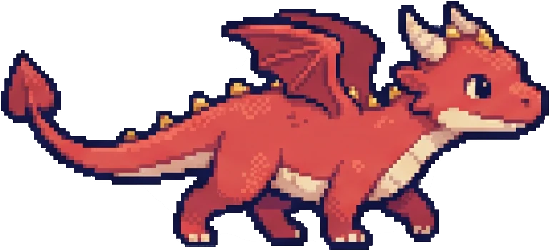
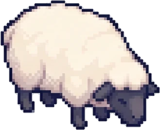
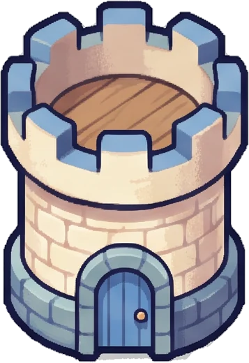

Um quebra-cabeça de lógica numa ilha de cavaleiros, dragões e ovelhas.
100 fases. Grátis. Joga sem internet.
Baixe agora
Siga no InstagramLeve todos os cavaleiros até as torres
Cavaleiros da Ilha é um quebra-cabeça de lógica com regras simples e desafios cada vez mais espertos. Numa ilha em pixel art, cavaleiros, dragões e ovelhas dividem um tabuleiro 5x5. Sua missão: colocar cada cavaleiro dentro de uma torre.

100 fases, do Escudeiro ao Mago
Até 3 estrelas por fase: resolva com o menor número de saltos
Travou? O botão de solução mostra o caminho, passo a passo
Joga sem internet e sem cadastro
Arte em pixel e trilha sonora própria
Em português, inglês, espanhol e coreano
Aprenda em um minuto
Cavaleiro: só anda pulando, em linha reta, por cima de uma ou mais peças, e cai na primeira casa vazia.

Dragão: desliza para frente e para trás e pode abrir ou fechar o caminho.

Ovelha e pedra: nunca saem do lugar.

Torre: vazia, é casa livre. Com um cavaleiro dentro, vira peça e dá para pular por cima.
Veja o jogo em ação
Uma fase de verdade, do primeiro salto até a última torre.
Feito pela Daenamu Studio
A Daenamu Studio é um estúdio independente brasileiro. Fazemos jogos de lógica com regras simples, para jogar em poucos minutos por dia, sozinho ou em família. Cavaleiros da Ilha é o nosso primeiro jogo.
A ilha está esperando
Grátis para Android e iOS.